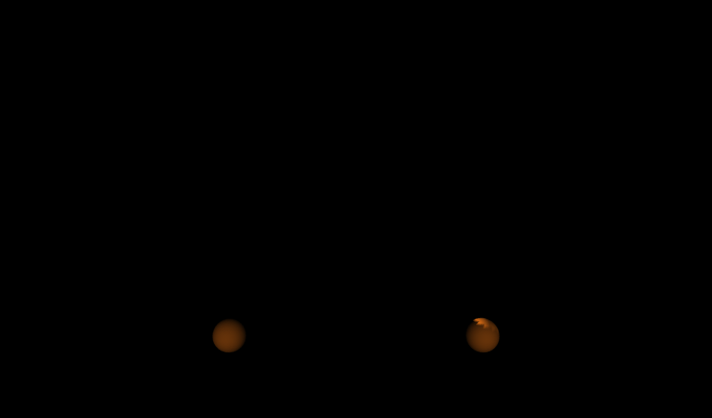

|


|
By default, you have one light in the scene, attached to your head.
For more realism, you can add multiple lights: suns, light bulbs, candles, flashlights, spotlights, firelight.
Lights can be positioned, oriented, and colored.
Lights do not cast shadows.
There are three types of lights: PointLight, DirectionalLight, and SpotLight.
All lights have an on/off, intensity, ambient effect, and color fields.
PointLight and SpotLight nodes have a location, radius, and attenuation.
DirectionalLight and SpotLight nodes have a direction.
These X3D scenes are adapted directly from the
original VRML 2.0 Sourcebook chapter examples.
Also available:
Introduction to VRML97 SIGGRAPH98 course notes.
|


![[1] Figure20.04HeadlightSpheres.x3d - Spheres](_viewpoints/Figure20.04HeadlightSpheres.x3d._VP_Spheres.png){kind=link}
![[3] Figure20.05FlatMesh.x3d - Flat mesh](_viewpoints/Figure20.05FlatMesh.x3d._VP_Flat_mesh.png){kind=link}
![[5] Figure20.06aPointLightSpheres.x3d - PointLight at center of spheres. Note that light rays pass through geometry.](_viewpoints/Figure20.06aPointLightSpheres.x3d._VP_PointLight_at_center_of_spheres._Note_that_light_rays_pass_through_geometry..png){kind=link}
![[6] Figure20.06aPointLightSpheres.x3d - (default X3D view from 0 0 10)](_viewpoints/Figure20.06aPointLightSpheres.x3d._VP_Default_viewpoint.png){kind=link}
![[7] Figure20.06bPointLightSpheresIntensity.x3d - PointLight at center of spheres. Note that light rays pass through geometry.](_viewpoints/Figure20.06bPointLightSpheresIntensity.x3d._VP_PointLight_at_center_of_spheres._Note_that_light_rays_pass_through_geometry..png){kind=link}
![[9] Figure20.07PointLightSpheresAttenuation.x3d - PointLight at center of spheres. Note that light rays pass through geometry.](_viewpoints/Figure20.07PointLightSpheresAttenuation.x3d._VP_PointLight_at_center_of_spheres._Note_that_light_rays_pass_through_geometry..png){kind=link}
![[11] Figure20.08PointLightSpheresSmallRadius.x3d - PointLight at center of spheres. Note that light rays pass through geometry.](_viewpoints/Figure20.08PointLightSpheresSmallRadius.x3d._VP_PointLight_at_center_of_spheres._Note_that_light_rays_pass_through_geometry..png){kind=link}
![[21] Figure20.12TwoDirectionalLightsAimingLeftRightThroughSpheres.x3d - DirectionalLight shining parallel rays to right. No location, light source is infinitely distant.](_viewpoints/Figure20.12TwoDirectionalLightsAimingLeftRightThroughSpheres.x3d._VP_DirectionalLight_shining_parallel_rays_to_right._No_location,_light_source_is_infinitely_distant..png){kind=link}
![[23] Figure20.13aDirectionalLightSunrise.x3d - Cue the sunrise, stage right](_viewpoints/Figure20.13aDirectionalLightSunrise.x3d._VP_Cue_the_sunrise,_stage_right.png){kind=link}
![[24] Figure20.13aDirectionalLightSunrise.x3d - (default X3D view)](_viewpoints/Figure20.13aDirectionalLightSunrise.x3d._VP_Default_viewpoint.png){kind=link}
![[26] Figure20.13bDirectionalLightNoon.x3d - (default X3D view from 0 0 10)](_viewpoints/Figure20.13bDirectionalLightNoon.x3d._VP_Default_viewpoint.png){kind=link}
![[27] Figure20.13cDirectionalLightSunset.x3d - Exit sun, stage left](_viewpoints/Figure20.13cDirectionalLightSunset.x3d._VP_Exit_sun,_stage_left.png){kind=link}
![[28] Figure20.13cDirectionalLightSunset.x3d - (default X3D view)](_viewpoints/Figure20.13cDirectionalLightSunset.x3d._VP_Default_viewpoint.png){kind=link}
![[30] Figure20.14DirectionalLightSunAnimated.x3d - (default X3D view)](_viewpoints/Figure20.14DirectionalLightSunAnimated.x3d._VP_Default_viewpoint.png){kind=link}
![[31] Figure20.15aSpotLightSpheres.x3d - SpotLight shining a cone of light rays to right.](_viewpoints/Figure20.15aSpotLightSpheres.x3d._VP_SpotLight_shining_a_cone_of_light_rays_to_right..png){kind=link}
![[33] Figure20.15bWideAngleSpotLightSpheres.x3d - SpotLight shining a cone of light rays to right.](_viewpoints/Figure20.15bWideAngleSpotLightSpheres.x3d._VP_SpotLight_shining_a_cone_of_light_rays_to_right..png){kind=link}
![[35] Figure20.16SpotLightBeamWidthComparison.x3d - SpotLights shining on meshes, outer cone 45 degrees. Inner cone varies 90 to 45 to 5 degrees.](_viewpoints/Figure20.16SpotLightBeamWidthComparison.x3d._VP_SpotLights_shining_on_meshes,_outer_cone_45_degrees._Inner_cone_varies_90_to_45_to_5_degrees..png){kind=link}
![[36] Figure20.16SpotLightBeamWidthComparison.x3d - SpotLight beam differences are more pronounced at narrow angles](_viewpoints/Figure20.16SpotLightBeamWidthComparison.x3d._VP_SpotLight_beam_differences_are_more_pronounced_at_narrow_angles.png){kind=link}
![[38] Figure20.17aSimpleWorldNoShadows.x3d - Simple sphere scene](_viewpoints/Figure20.17aSimpleWorldNoShadows.x3d._VP_Simple_sphere_scene.png){kind=link}
![[40] Figure20.17aSimpleWorldNoShadows.x3d - (default X3D view from 0 0 10)](_viewpoints/Figure20.17aSimpleWorldNoShadows.x3d._VP_Default_viewpoint.png){kind=link}
![[41] Figure20.17bSimpleWorldFakeShadows.x3d - Fake showdows in simple sphere scene](_viewpoints/Figure20.17bSimpleWorldFakeShadows.x3d._VP_Fake_showdows_in_simple_sphere_scene.png){kind=link}
![[43] Figure20.17bSimpleWorldFakeShadows.x3d - (default X3D view)](_viewpoints/Figure20.17bSimpleWorldFakeShadows.x3d._VP_Default_viewpoint.png){kind=link}